Next: Formalism II - Neutron Up: mcdiff - calculate and Previous: How to calculate only Contents Index
The resonant magnetic scattering intensity is calculated as outlined for example in [28]
for the magnetic electric dipole scattering according to the squared absolute value of the scattering
amplitude given for the ion  in the lattice as
in the lattice as
| (22) | |||
| 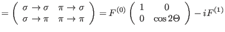 | |||
| 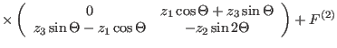 | |||
| 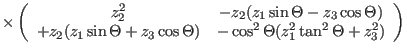 |
Here, dropping the site index  ,
,  is the Bragg scattering angle and
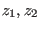 and 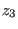 aree components of the magnetization vector with respect
to the coordinate system
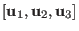. The scattering plane, defined by the
direction of the incident and final wave vectors 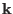 and 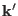, contains 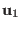 lying
perpendicular and in the sense of and 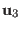 parallel to the scattering
vector
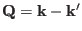. The scattering channels for
is the Bragg scattering angle and
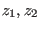 and 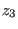 aree components of the magnetization vector with respect
to the coordinate system
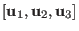. The scattering plane, defined by the
direction of the incident and final wave vectors 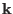 and 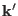, contains 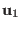 lying
perpendicular and in the sense of and 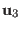 parallel to the scattering
vector
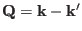. The scattering channels for  and 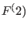 terms are considered
separately and no interference is considered.
and 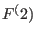 terms are considered
separately and no interference is considered.
To determine the azimuthal dependence the 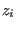 are expanded in terms of the components 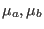 and 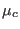 of the magnetic moment along the orthogonal crystallographic unit cell vectors 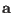,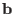 and (for non orthogonal crystal lattices currently magnetic xray scattering intensities cannot be calculated):
| 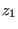 | 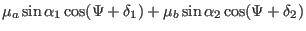 | ||
| 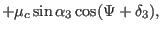 | |||
| 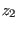 | 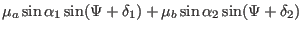 | ||
| 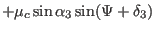 | |||
| 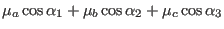 | (23) |
with angles 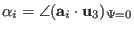 and 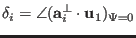, where 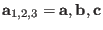 and 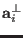 is the projection of 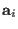 onto the plane perpendicular to . In the chosen experimental geometry 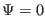 when points to the x-ray source.